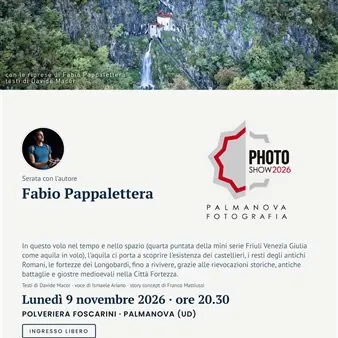

lun 9 nov · dalle 20:30
Friuli Venezia Giulia come aquila in volo — Serata con l'autore Fabio Pappalettera
Nell'ambito del Palmanova Photo Show, il Circolo Fotografico Palmarino ospita Fabio Pappalettera di Drone Reportage, per una serata dedicata alla quarta puntata del suo progetto Friuli Venezia Giulia come aquila in volo: Tra storia e borghi. In questo volo nel tempo e nello…
 Indicazioni
Indicazioni
- Costi e prenotazioni
- Costo non indicato · Prenotazione non indicata
- Programma
- Programma da verificare. Apri la fonte ufficiale per orari e possibili aggiornamenti.
- In caso di maltempo
- Nessuna indicazione specifica pubblicata.
- Note
- Acquisito automaticamente dalla fonte.
L’EVENTO
Descrizione completa
Nell'ambito del Palmanova Photo Show, il Circolo Fotografico Palmarino ospita Fabio Pappalettera di Drone Reportage, per una serata dedicata alla quarta puntata del suo progetto Friuli Venezia Giulia come aquila in volo: Tra storia e borghi.
«Ogni volta che tornavo da un viaggio, più ricco dentro, cominciavo a vedere i posti che frequento da sempre con occhi e spirito diversi, comprendendo che la maggioranza degli autoctoni conosce la propria terra meno dei turisti che la visitano. È per questo che dal 2011 ho cominciato a vedere la mia terra di origine — il Friuli Venezia Giulia — da una prospettiva diversa, che solo gli uccelli possono avere. L'emozione che ho provato quando friulani sparsi nel mondo mi scrivevano "grazie" con le lacrime agli occhi, dopo la pubblicazione del video Friuli spettacolare, mi ha fatto capire che ero sulla strada giusta.» — Fabio Pappalettera
Storia di borghi e borghi ricchi di storia: in questo volo nel tempo e nello spazio l'aquila ci porta a scoprire, con una veduta aerea, l'esistenza dei castellieri, i resti degli antichi Romani, le fortezze dei Longobardi, oltre che a rivivere, grazie alle rievocazioni storiche, antiche battaglie, giostre medioevali e gli assedi nella Città Fortezza.
Riprese: Fabio Pappalettera (Drone Reportage)
Testi: Davide Macor
Voce: Ismaele Ariano
Story concept: Franco Mattiussi
Durata: 30'
Ingresso libero fino a raggiungimento posti a sedere
IL PROGRAMMA
Programma e orari
Appuntamenti raccolti dalle fonti elencate. Dove manca un orario, non è ancora disponibile in questa scheda.
Programma pubblicato
- Dal 2026-11-09 al 2026-11-09
INFORMAZIONI UTILI
Prima di partire
- Controllare la fonte prima di partire.
ORGANIZZAZIONE